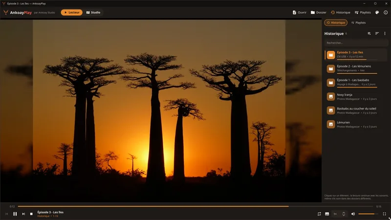
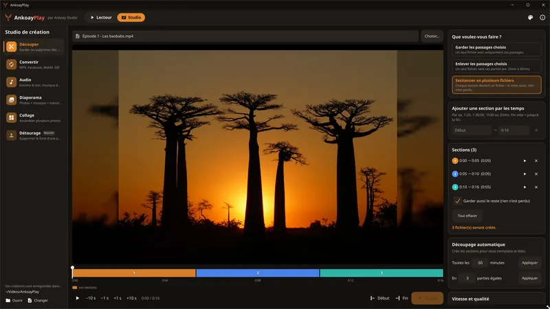
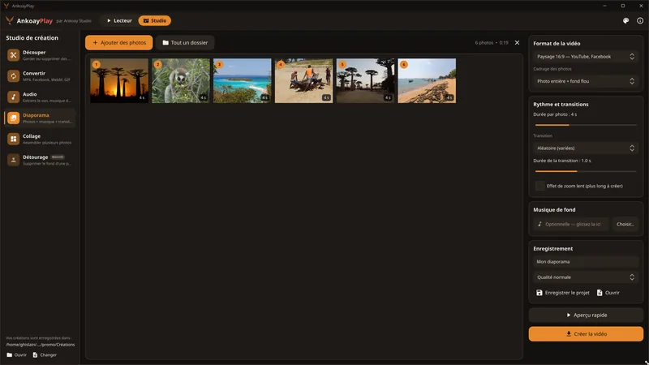
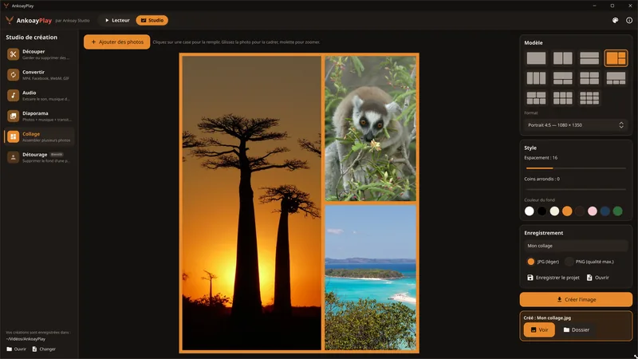
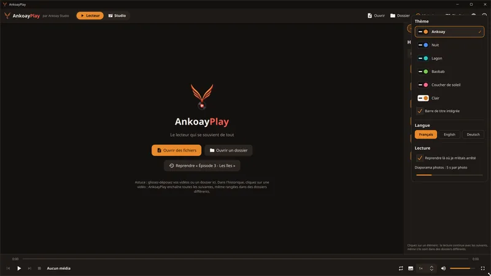

Logiciels de gestion
Suivi de projets, de stocks, de clients ou de tâches : des outils clairs, adaptés à vos processus et à votre vocabulaire.
Entreprise de création de logiciels · Madagascar
Ankoay Studio conçoit, développe et accompagne des logiciels adaptés à vos besoins : gestion de projets, outils métier, logiciels pédagogiques et applications multimédia.
Notre métier
Plutôt que d'adapter votre organisation à un logiciel standard, nous créons l'outil qui correspond à vos méthodes, à vos équipes et à vos contraintes.
Suivi de projets, de stocks, de clients ou de tâches : des outils clairs, adaptés à vos processus et à votre vocabulaire.
Logiciels pour Windows et Linux, rapides et utilisables même avec une connexion limitée.
Intégration d'assistants intelligents pour résumer, organiser, planifier et gagner du temps au quotidien.
Logiciels d'apprentissage pour écoles, centres de formation et entreprises.
Nos logiciels
Gestion multiprojet avec assistance IA
Pilotez plusieurs projets depuis un seul logiciel, avec un assistant IA qui vous aide à organiser le travail et à garder une vue d'ensemble.
Demander une présentationLogiciels d'apprentissage
Des logiciels pédagogiques pour apprendre et enseigner, destinés aux écoles, aux formateurs et aux entreprises.
Demander une présentationLecteur multimédia et studio de création
Le lecteur qui se souvient de tout, avec un studio pour découper, convertir, extraire le son, créer des diaporamas et des collages. Gratuit, sans abonnement et sans publicité.
Télécharger gratuitementGratuit · Windows et Ubuntu
Le lecteur qui se souvient de tout, et un studio de création intégré.

L'historique retient la position de chaque vidéo et enchaîne les épisodes suivants, même rangés dans des dossiers différents (clé USB, téléchargements…).

L'original n'est jamais modifié : chaque création est une nouvelle copie.



0 téléchargements
Gratuit · Sans abonnement · Sans publicité
Windows : si Windows affiche « Windows a protégé votre ordinateur », cliquez sur « Informations complémentaires » puis « Exécuter quand même ». Ce message apparaît pour les logiciels récents qui ne sont pas encore connus de Microsoft.
Ubuntu : ouvrez un terminal dans le dossier du fichier téléchargé, puis tapez :
sudo apt install ./ankoayplay_*_amd64.debContact
Décrivez-nous votre besoin : nous vous répondons avec une proposition adaptée, que ce soit pour un logiciel sur mesure, Ankoay Central ou Ankoay Academy.
Nos coordonnées seront bientôt disponibles ici.